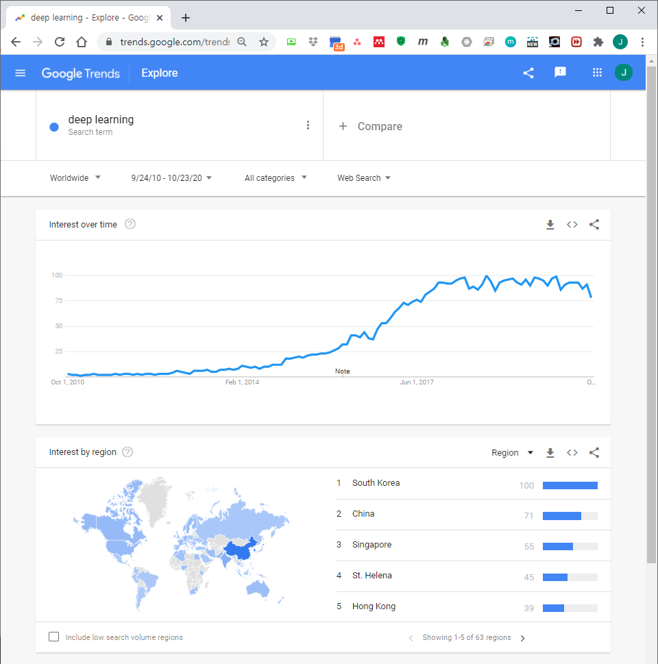
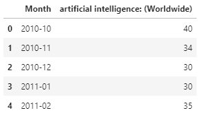
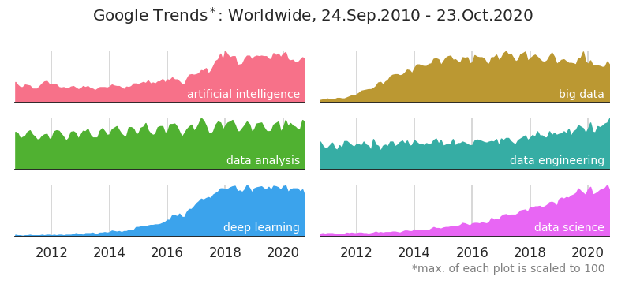
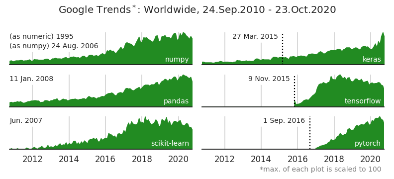
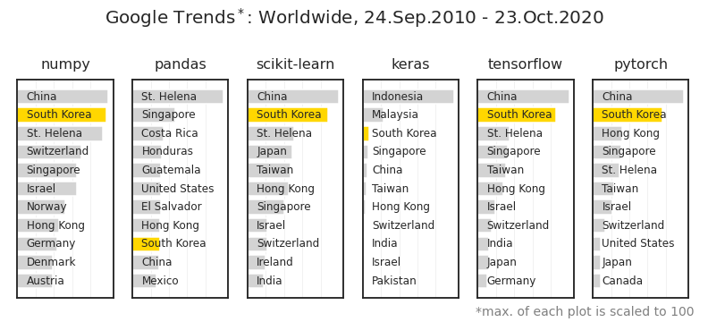

- Google trend 분석 결과는 그 자체로 깔끔합니다.
- 그러나 여러 항목을 개별적으로 분석하려면 데이터를 다운받아 분석하는 것이 좋습니다.
1. Google Trends
- Google trends는 검색어를 입력하는 것 만으로 웹, 이미지, 또는 유튜브에서 해당 검색어가 얼마나 빈번하게 등장하는지 경향을 쉽게 알 수 있습니다.
- 절대값이 아니라 검색된 기간 내의 최대값을 100으로 표준화해서 보여준다는 점이 조금 아쉽기는 하지만 정성적인 경향 변화를 보기에 적절합니다.

지난 10년간 인공지능 관련 키워드의 경향을 알아봤습니다.
- 날짜에 Custom Range를 지정해서 넣고,
- 검색어에 artificial intelligence, big data 등 단어를 넣습니다.
- 오른쪽 위 다운로드 버튼을 누르면 .csv 파일 형식으로 다운로드 됩니다.
파일을 열어보면 구조가 간단합니다.
시간에 따른 검색 빈도가 표준화되어 나타납니다.

- csv 다운로드시 파일명을 지정할 수 없습니다.
- 여러 검색어를 다운받으며 적절히 파일명을 바꿔줍니다.
2. Python에서 여러 데이터 비교하기
- 각자 다른 값이 최대값 100으로 표준화되어 있습니다.
- 따라서 이들을 겹쳐 그리는 것은 무의미한 교차점들을 만들기 때문에 적절치 않습니다.
- 여러 개의 공간을 만들고 별도로 그려줍니다.
1
2
3
4
5
6
7
8
9
10
11
12
13
14
15
16
17
18
19
20
21
22
23
24
25
26
27
28
29
30
31
32
33
34
35
36
37
38# Google Trends 파일명
files = ['ai_time.csv', 'bigdata_time.csv', 'da_time.csv', 'de_time.csv', 'dl_time.csv', 'ds_time.csv']
nfiles = len(files)
# 시각화
fig, axes = plt.subplots(ncols=2, nrows=3, figsize=(11, 5),
sharex=True, sharey=True)
axs = axes.ravel()
dfs = {}
for i, (ax, file) in enumerate(zip(axs, files)):
dfs[file] = pd.read_csv(os.path.join(path, file), skiprows=2)
dfs[file]["year"] = dfs[file]["Month"].apply(lambda s: s.split("-")[0])
cols = dfs[file].columns
cols_clear = cols[1].split(":")[0]
dfs[file].rename(columns={cols[1]: cols_clear}, inplace=True)
region = cols[1].split(": ")[1][1:-1]
df_idx = dfs[file].reset_index().groupby("year").nth(0)["index"].values
ax.fill_between(dfs[file].index, 0, dfs[file][cols_clear], color=f"C{i}")
ax.annotate(cols_clear, (dfs[file].shape[0]-3, 10), ha="right", color="w", fontsize=14)
ax.spines["left"].set_visible(False)
ax.spines["top"].set_visible(False)
ax.spines["right"].set_visible(False)
ax.set_xlim(0, dfs[file].shape[0]-1)
ax.set_ylim(0, 100)
ax.set_yticks([])
ax.grid()
if i > 3:
ax.set_xticks(df_idx[::2][1:])
ax.set_xticklabels(dfs[file]["year"].loc[df_idx].values[::2][1:])
axs[5].text(dfs[file].shape[0]-3, -70, "*max. of each plot is scaled to 100",
ha="right", c="gray", fontsize=14)
fig.suptitle("Google Trends$^*$:" + f" {region}, 24.Sep.2010 - 23.Oct.2020", fontsize=20)
fig.tight_layout(rect=[0,-0.05,1,1])
- data analysis에 반년 주기성이 보입니다.
- big data는 2012년 이후 상승했네요.
- deep learning은 2016년 이후 급격히 상승했습니다.
- data science와 data engineering이 꾸준하게 상승중입니다.
이번에는 주요 라이브러리 경향성을 보겠습니다.
1
2
3
4
5
6
7
8
9
10
11
12
13
14
15
16
17
18
19
20
21
22
23
24
25
26
27
28
29
30
31
32
33
34
35
36
37
38
39
40
41
42
43
44
45
46
47
48
49
50
51
52libs_time = ['numpy.csv', 'keras.csv', 'pandas.csv', 'tensorflow.csv', 'sklearn.csv', 'pytorch.csv']
nfiles = len(lib_time)
fig, axes = plt.subplots(ncols=2, nrows=3, figsize=(11, 5),
sharex=True, sharey=True) #, gridspec_kw={"hspace":0.1, "wspace":0.05})
axs = axes.ravel()
dfs = {}
for i, (ax, file) in enumerate(zip(axs, libs_time)):
dfs[file] = pd.read_csv(os.path.join(path, file), skiprows=2, na_values="<1")
dfs[file]["year"] = dfs[file]["Month"].apply(lambda s: s.split("-")[0])
cols = dfs[file].columns
cols_clear = cols[1].split(":")[0]
dfs[file].rename(columns={cols[1]: cols_clear}, inplace=True)
region = cols[1].split(": ")[1][1:-1]
df_idx = dfs[file].reset_index().groupby("year").nth(0)["index"].values
ax.fill_between(dfs[file].index, 0, dfs[file][cols_clear], color="forestgreen")
ax.annotate(cols_clear, (dfs[file].shape[0]-3, 10), ha="right", color="w", fontsize=14)
ax.spines["left"].set_visible(False)
ax.spines["top"].set_visible(False)
ax.spines["right"].set_visible(False)
ax.set_xlim(0, dfs[file].shape[0]-1)
ax.set_ylim(0, 100)
ax.set_yticks([])
ax.grid()
if i > 3:
ax.set_xticks(df_idx[::2][1:])
ax.set_xticklabels(dfs[file]["year"].loc[df_idx].values[::2][1:])
axs[0].annotate("(as numeric) 1995", (0, 80),ha="left", fontsize=14, backgroundcolor="w")
axs[0].annotate("(as numpy) 24 Aug. 2006 ", (0, 50),ha="left", fontsize=14, backgroundcolor="w")
axs[1].axvline(53, c="k", linestyle=":")
axs[1].annotate("27 Mar. 2015", (53-3, 80),ha="right", fontsize=14, backgroundcolor="w")
axs[2].annotate("11 Jan. 2008 ", (0, 80),ha="left", fontsize=14, backgroundcolor="w")
axs[3].axvline(61, c="k", linestyle=":")
axs[3].annotate("9 Nov. 2015", (61-3, 80),ha="right", fontsize=14, backgroundcolor="w")
axs[4].annotate("Jun. 2007 ", (0, 80),ha="left", fontsize=14, backgroundcolor="w")
axs[5].axvline(71, c="k", linestyle=":")
axs[5].annotate("1 Sep. 2016", (71-3, 80),ha="right", fontsize=14, backgroundcolor="w")
axs[5].text(dfs[file].shape[0]-3, -70, "*max. of each plot is scaled to 100",
ha="right", c="gray", fontsize=14)
fig.suptitle("Google Trends$^*$:" + f" {region}, 24.Sep.2010 - 23.Oct.2020", fontsize=20)
fig.tight_layout(rect=[0,-0.05,1,1])
라이브러리별 initial release date를 함께 표기했습니다.
tensorflow와 pytorch는 고유명사라서 initial release이후 등장합니다.
그러나 뿔이라는 뜻을 가진 보통명사인 keras는 initial release 한참 전부터 등장합니다.
맏형격인 scikit-learn은 2007년에 처음 나왔지만 유의미한 신호가 보이지 않다가 2012년 이후 쭉쭉 올라갔네요.
- 라이브러리별로 어느 나라에서 많이 찾았는지 보겠습니다.
1
2
3
4
5
6
7
8
9
10
11
12
13
14
15
16
17
18
19
20
21
22
23
24
25
26
27
28
29
30
31
32
33fig, axs = plt.subplots(ncols=6, figsize=(11, 5))
libs_map_ = ["numpy", "pandas", "sklearn", "keras", "tensorflow", "pytorch"]
for ax, l in zip(axs, libs_map_):
lib = l.split("_")[0]
shares = dfs_map[l+'_map.csv'].loc[:10, lib]
countries = dfs_map[l+'_map.csv'].loc[:10, "Country"]
ax.barh(countries, shares, fc="lightgray")
ax.set_yticklabels([])
ax.invert_yaxis()
ax.set_xticks(list(range(0, 100, 20)))
ax.set_xticklabels([])
ax.grid(axis="x", c="lightgray", lw=1, alpha=0.3)
if l == "sklearn":
title = "scikit-learn"
else:
title = l
ax.set_title(title, fontsize=16, pad=12)
idx_korea = np.where("South Korea" == countries.values)[0]
if len(idx_korea) > 0:
ax.patches[idx_korea[0]].set_facecolor("gold")
for i, country in enumerate(countries):
ax.annotate(country, (10, i), va="center", fontsize=12)
fig.text(0.98, 0.02, "*max. of each plot is scaled to 100",
ha="right", c="gray", fontsize=14)
fig.suptitle("Google Trends$^*$:" + f" {region}, 24.Sep.2010 - 23.Oct.2020", fontsize=20)
fig.tight_layout(rect=[0,0.02,1,1])
- 대부분 중국이 1위, 한국이 2위입니다.
- 사실 의외입니다. 수위에 있을 것 같은 미국은 검색이 안 된 것이 아니라 한참 아래 순위에 있습니다.
- 미국 사람들은 검색어에 뭘 넣는 걸까요? 검색을 안하는 건 아닐텐데요.